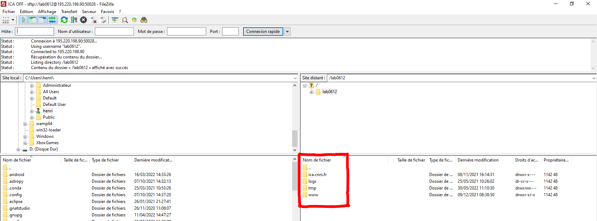

Installation¶
Installation de l’environnement de travail¶
Pour travailler sur le site de l’institut clément ader il va falloir installer différents logiciels. Pour commencer vous pouvez choisir un éditeur de code de votre choix, l’éditeur que nous utilisons est Visual Studio Code.
Il faudra ensuite différents logiciels que je vais vous présenter ci-dessous.
Note
Il n’y a pas d’ordre pour l’installation des logiciels. L’ordre pour le lancement sera donné dans les explications.
Important
Les différents identifiants : utilisateur et mot de passe ne seront pas donnés pour éviter que l’acces soit public et car il est possible que les identifiants changent.
FileZilla¶
FileZilla Client est un client FTP, FTPS et SFTP, développé sous la licence publique générale GNU. Avec ce logiciel vous pourrez gérer les fichiers du site ICA. Pour commencer vous pouvez télécharger FileZilla sur le lien ici : Télécharger FileZilla Il vous suffit de choisir FileZilla Client et de suivre l’installation.
Après installation lancez le logiciel et cliquez sur le bouton permettant d’ouvrir le gestionnaire de sites.

On va maintenant installer le serveur ICA OFF. Deux serveurs et sites sont diponibles : - Préprod ICA, qui vous permet de tester toutes vos modifications et d’avoir un site permettant de laisser le site ICA OFF disponible pour les utilisateurs - Prod ICA, nommé ICA OFF sur FileZilla est le site officiel que tous les utilisateurs utilisent.
Voici l’affichage du gestionnaire de sites :

Pour vous connecter vous pouvez ajouter avec le bouton Nouveau site voici les informations de connexion pour les deux sites.
ICA Prod :¶
Protocole : SFTP
Hôte : 195.220.198.90
Port : 50028
Utilisateur : Demander à un responsable
Mot de Passe : Demander à un responsable
ICA Préprod :¶
Protocole : SFTP
Hôte : 195.220.198.90
Port : 50025
Utilisateur : Demander à un responsable
Mot de Passe : Demander à un responsable
Une fois ajouté vous pouvez vous connecter au serveur et vous retrouverez les fichiers du site. Si on se connecte au site ICA Prod on retrouve :
Pour acceder aux dossiers il faut choisir ica.cnrs.fr ensuite www et enfin vous pouvez retrouver tous les fichiers du site ICA .

FortiClient VPN¶
Pour l’installation du VPN de l’INSA vous avez un tutoriel sur le lien ci-contre : Installation VPN
PhpMyAdmin¶
Pour acceder aux base de donnée SQL via PhpMyAdmin nous avons deux liens avec différentes données de connexion.
ICA Prod :¶
Lien vers la page PhpMyAdmin : PhpMyAdmin Prod
Utilisateur : Demander à un responsable
Mot de passe : Demander à un responsable
ICA PréProd :¶
Lien vers la page PhpMyAdmin : PhpMyAdmin Prod
Utilisateur : Demander à un responsable
Mot de passe : Demander à un responsable
Documentation¶
Installation¶
Pour travailler sur la doc il va faloir suivre différentes étapes :
Premièrement prennez le temps de découvrir la syntaxe du langage utilisé, voici deux liens qui vous permettrons de mieux comprendre comment coder la documentation. Site tutoriel Tutoriel officiel français
Pour l’organisation des fichiers et comment les créer vous pouvez suivre les tutoriels ci-dessus qui sont très explicites.
Une fois votre page prete il est nécéssaire d’avoir ubuntu sur votre ordinateur voici un tutoriel pour installer une invite de commande ubuntu facilement et gratuitement. Tutoriel ubuntu windows
Enfin il est préférable pour la dernière étape d’avoir GitHub Desktop sur son ordinateur pour pouvoir envoyer sur le git vos modifications.
Petit tutoriel pour l’installation complete de la doc : Installation doc
Utilisation¶
Pour créer une nouvelle page il vous suffit de créer un fichier en .rst et de l’ajouter au sommaire dans le fichier index.rst. Une fois vos modifications apportées lancez votre invite de commande ubuntu et placez vous dans le dossier lié au git. Pour cela entrez la commande : cd [chemin d’accès]
Note
Les crochets ne font pas parti de la commande
Un fois dans le bon répertoire entrez la commande : make html
Cette commande permettra de compiler tous les fichier et les fichiers se modifient automatiquement. Pour la dernière étape il ne vous reste plus qu’a commit les modifications sur le git et à tout push. Rendez vous ensuite sur le site readthedoc dans votre projet et observez la partie compilation. Une fois la compilation terminée il ne vous reste plus qu’a aller sur votre documentation et vos modifications ont été appliquées.